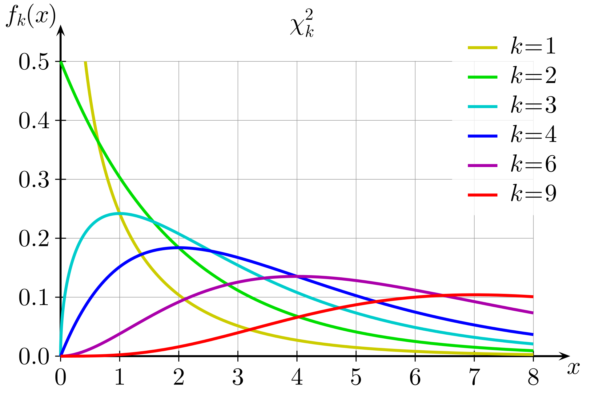

Chapter 13 Categorical Data Analysis
All of the methods we’ve discussed so far are applied to numeric data (possibly across multiple groups). Now, we will discuss a method specific to categorical data.
We actually sort of did this in chapters 8 and 9 with a proportion test. A proportion test essentially tests a categorical variable with 2 categories, or levels. If there are only 2 levels, we can recode the data as 0-1 and make use of numeric methods.
If we have a categorical variable with more than 2 levels, a proportion test will no longer work.
13.1 Goodness-of-fit test
In general, when working with a categorical response variable, we want to check if we observe the different categories at the rates we expect. For example, a bulk container of trail mix is advertised as having 25% peanuts, 20% M&Ms, 20% pecans, 20% almonds, and 15% raisins.
Suppose we took several scoops of trail mix and counted the contents:
| Peanuts | M&Ms | Pecans | Almonds | Raisins | Total |
|---|---|---|---|---|---|
| 85 | 58 | 61 | 60 | 55 | 319 |
We want to check if the contents match the advertising. If we wanteed to use a proportion test, we would have to separately check every single ingredient against its expected percentage. 85/319 versus 0.25, 58/319 versus 0.2, etc. Instead, we will develop a test to check all of the categories at once.
If the advertising were correct, what would we expect our sample of 319 to look like? We would expect \(0.25\times 319 = 79.75\) peanuts. For this calculation, we ignore the observed count and multiply the total by the advertised value. We would expect \(0.25 \times 319 = 79.75\).
We can make a table of all of the expected counts under the assumption that the advertising is correct.
| Peanuts | M&Ms | Pecans | Almonds | Raisins | Total | |
|---|---|---|---|---|---|---|
| Observed | 85 | 58 | 61 | 60 | 55 | 319 |
| Expected | 79.75 | 63.8 | 63.8 | 63.8 | 47.85 | 319 |
These expected counts add up to the same total as before. We will compare the observed and expected counts to make a decision about our hypotheses in a chi-squared (chi pronounced “kai”) goodness of fit test. Formally, our null hypothesis is expressed in terms of a model on the population. In this case we have, \[\begin{align*} H_0: \;\; & \text{The true proportions match } (0.25, 0.2, 0.2, 0.2, 0.2, 0.15). \\ H_A: \;\; & \text{The true proportions do not match } (0.25, 0.2, 0.2, 0.2, 0.2, 0.15). \end{align*}\]
The expected counts represent the case where \(H_0\) is true. We find evidence against \(H_0\) by comparing the observed and expected counts for each category. If the observed count is very different from the expected count, that is strong evidence against \(H_0\) being true.
The chi-squared test statistic is called \(\chi^2\), after the greek letter “chi”. It compares the squared differences between the counts for each category. We first calculate \[\frac{(\text{Observed - Expected})^2}{\text{Expected}}\] for each category. For example, \[\frac{(\text{85 - 79.75})^2}{\text{79.75}} \;=\; 0.346\] is the contribution from the “peanuts” category. The test statistic is computed by adding this quantity across all levels of our variable. \[\chi^2 \;=\; \sum_{levels} \frac{(\text{Observed - Expected})^2}{\text{Expected}}\] If the null hypothesis is true, then we expect this quantity to be small for all of the categories.
Finish calculcating the chi-squared test statistic for the trail mix example.
We take the difference (Observed - Expected) for each category, square it, then divide by Expected to standardize. We then have to add this up for all five levels. \[\begin{align*} \chi^2_{obs} =\; & \frac{(85 - 79.75)^2}{79.75} + \frac{(58 - 63.8)^2}{63.8} + \frac{(61 - 63.8)^2}{63.8} \\ &+ \frac{(60 - 63.8)^2}{63.8} + \frac{(55 - 47.85)^2}{47.85} \\ \\ = \; & 2.29 \end{align*}\]
How do we use \(\chi^2\) to gather evidence against the null? If \(H_0\) is true, then the differences between observed and expected counts should be small, and so \(\chi^2\) should be a small positive number. On the other hand, if there is a big difference between observed and expected counts, \(\chi^2\) should be a large positive number.
A larger value of \(\chi^2\) means we have stronger evidence against \(H_0\), so we always use the positive direction when we conclude this test. Formally, if \(H_0\) is true, \(\chi^2\) follows a chi-squared distribution. This is a positive, continuous distribution with a long right tail. Here is a visual from Wikipedia.

The exact shape depends on the degrees of freedom, which we need to provide.
Before we complete our test, we need to check that the necessary assumptions are met. Like the proportion test, the chi-squared test is an approximate test based on the CLT. In order for it to be accurate, we want to observe at least 5 items in each category. This is certainly true for our data, so we are safe to use a chi-squared null distribution for our test statistic.
Let’s figure out the degrees of freedom for our test. When we were working with numeric data, the df was based on the number of observations. In this context, it is based on the number of categories. The df is given by \(\# levels - 1\). There are 5 categories in the trail mix data, so we have 4 degrees of freedom.
The p-value for our test is the area above \(\chi^2_{obs} = 2.29\) on the chi-squared curve with 4 degrees of freedom. We can find this with the R command pchisq.
## [1] 0.6825903With such a large p-value, there is no evidence that the trail mix contents are different from what is advertised. Note that for this type of test, the p-value is always calculated by finding the area above the test statistic. This is because larger test statistic values give us more evidence against the null.
In general, a chi-squared goodness of fit test tests a single categorical variable. The hypotheses are \[\begin{align*} H_0: \;\; & \text{The true proportions match a certain model.} \\ H_A: \;\; & \text{The true proportions do not match the model.} \end{align*}\] and the test statistic is \[\chi^2 \;=\; \sum_{levels} \frac{(\text{Observed - Expected})^2}{\text{Expected}}.\] The null distribution is a chi-squared distribution with \(\# levels - 1\) degrees of freedom, and the p-value is the area above the test statistic on the null distribution.
We can also complete this test automatically in R. We provide the observed counts, but instead of expected counts, we provide the probabilities under the null. The chisq.test command performs the test automatically.
There is a correction/adjustment that is sometimes made to the chi-squared test to correct some of the error introduced by approximation. If we want R to match our by-hand work, we don’t want to make this correction.
# Observed counts
obs <- c(85, 58, 61, 60, 55)
# Keep expected counts as probabilities
exp <- c(0.25, 0.2, 0.2, 0.2, 0.15)
# Use chisq.test to perform test automatically
chisq.test(obs, p = exp, correct = FALSE)##
## Chi-squared test for given probabilities
##
## data: obs
## X-squared = 2.2905, df = 4, p-value = 0.6825Let’s look at another example. Many university classes are offered to students across multiple years. We might wonder, are freshmen and sophomores equally likely to attend lecture? Our null hypothesis is that the population matches the model that the two groups are equally likely to attend class. \[\begin{align*} H_0: &\text{ Freshmen and sophomores are equally likely to attend.} \\ H_A: &\text{ Freshmen and sophomores are not equally likely to attend.} \end{align*}\]
Let’s look at the actual class attendance to see if it is consistent with \(H_0\). In a (fake!) class of 75 attendees, 39 are freshmen and 36 are sophomores. Out of all of the enrolled students in class, 30.5% are freshmen and 69.5% are sophomores.
Perform a chi-squared goodness of fit test on the freshmen and sophomore data, using \(\alpha = 0.1\).
- What are the expected counts of freshmen and sophomores in the 75 attendees, if \(H_0\) were true?
If the null were true, then the distribution of freshmen and sophomores in class would match the overall distribution of 30.5% to 69.5%. The expected count of freshmen is \(75(0.305) = 22.875\) and the expected count of sophomores is \(75(0.695) = 52.125\).
- Calculate the chi-squared test statistic.
Here are the counts for the class attendance data.
| Freshmen | Sophomores | Total | |
|---|---|---|---|
| Observed | 39 | 36 | 75 |
| Expected | 22.875 | 52.125 | 75 |
The chi-squared test statistic is \[\chi^2_{obs} \;=\; \sum_{levels}\frac{(\text{Obs } - \text{Exp})^2}{\text{Exp}} \;=\; \frac{(39-22.875)^2}{22.875} + \frac{(36-52.125)^2}{52.125} \;=\; 16.355.\]
- Identify the degrees of freedom and calculate a p-value to finish the test.
The degrees of freedom for this test are given by the number of levels minus 1. Since there are only two categories, we have 1 df, so we use \(\chi^2_1\) as our null distribution. Our p-value is the area above the observed test statistic of 16.355.
## [1] 5.251743e-05We get a very small p-value of \(5.25\times 10^{-5}\), which is much smaller than \(\alpha = 0.1\). So, we reject the null hypothesis. This data gives us evidence that freshmen and sophomores are not equally likely to attend class.
How could the above hypothesis test be re-phrased in terms of a one-sample proportion test of \(\pi_{F}\), the proportion of class attendees who are freshmen?
13.2 Independence test
The goodness-of-fit test is used to analyze a single categorical variable. There is another type of chi-squared test that can be used to test the relationship between two categorical variables.
A sample of 250 students majoring in business and a sample of 500 business executives were asked: “Should corporations become more directly involved with social issues?” The two categorical variables are the group and the response.
If those two groups (students and executives) are independent, then the distribution of responses across the two groups should be about the same. If we know whether someone is a student or an executive, does that change what type of answer they will give to this question?
| Yes | No | Unsure | Total | |
|---|---|---|---|---|
| Executives | 345 | 135 | 20 | 500 |
| Students | 222 | 20 | 8 | 250 |
| Total | 567 | 155 | 28 | 750 |
Under the null hypothesis, the variables are not related, and we assume executives and students give the same type of responses. We can write this formally as a statement of the proportion of each answer type. \[H_0: \pi_{E, Yes} = \pi_{S, Yes},\quad \pi_{E, No} = \pi_{S, No},\quad \pi_{E, Unsure} = \pi_{S, Unsure}\] This is equivalently expressed in terms of independence. \[H_0: \text{ the two categorical variables are independent.}\] These two null hypotheses say exactly the same thing. If the variables are independent, then that would mean the probability of “Yes”, “No”, and “Unsure” would have to be the same across both executives and students.
Like the previous test, the table above shows the observed counts from the people that were surveyed. We need to calculate the expected counts under the null. This is easiest to do by considering the expected probability of each specific category.
If the variables are independent, what is \(P(\text{Student AND Yes})\)? For independent events, we can find the probability of both happening by multiplying the individual probabilities. \[P(\text{Student AND Yes}) \;=\; P(\text{Student})P(\text{Yes}) \;=\; \frac{250}{750}\cdot \frac{567}{750} \;=\; 0.252.\] Under the null assumption of independence, 25.2% of the 750 respondents should fall in the “Student + Yes” category. Thus the expected count is \(0.252\times 750 = 189\).
This calculation simplifies to \[\text{Expected count} \;=\; P(\text{Student})P(\text{Yes})\cdot \text{Total} \;=\; \frac{250}{750}\cdot \frac{567}{750}\cdot 750 \;=\; \frac{250\times 567}{750}.\] So, to find the expected count of a particular cell in the table, we take the row total times the column total, divided by the overall total.
Finish calculating the expected counts for the survey data.
\[\begin{align*} \text{Executives, Yes } &= \frac{500 \times 567}{750} = 378 \\ \\ \text{Executives, No } &= \frac{500 \times 155}{750} = 103.33 \\ \\ \text{Executives, Unsure } &= \frac{500 \times 28}{750} = 18.67 \\ \\ \text{Students, No } &= \frac{250\times 155}{750} = 51.67 \\ \\ \text{Students, Unsure } &= \frac{250\times 28}{750} = 9.33 \end{align*}\]
The table of observed and epxected counts is given below. Note that if we add up expected counts, the row and column totals all stay the same.
| Yes | No | Unsure | Total | |
|---|---|---|---|---|
| Executives | 345 (378) | 135 (103.33) | 20 (18.67) | 500 |
| Students | 222 (189) | 20 (51.67) | 8 (9.33) | 250 |
| Total | 567 | 155 | 28 | 750 |
Our chi-squared independence test statistic is still based on the squared difference between the observed and expected counts. Since we are working with two variables, we need to take a sum over all cells, or each combination of the two variables. The test statistic is \[\chi^2 \;=\; \sum_{cells} \frac{(\text{Observed - Expected})^2}{\text{Expected}}.\] In this example, we would need to add up six terms. The observed chi-squared test statistic is \[\begin{align*} \chi^2_{obs} &= \sum_{cells} \frac{(\text{Observed counts} - \text{Expected counts})^2}{\text{Expected counts}} \\ \\ \chi^2_{obs} &= \frac{(345-378)^2}{378} + \frac{(135-103.33)^2}{103.33} + \cdots = 38.042 \end{align*}\]
The relationship between \(\chi^2_{obs}\) and the null hypothesis is the same. A larger test statistic corresponds to a bigger difference between observed and expected counts, which means we have stronger evidence against the null of independence.